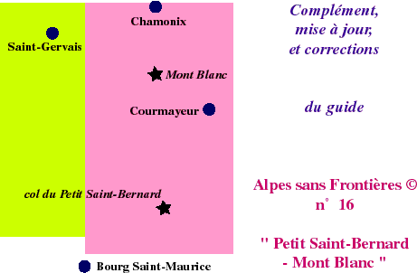

Ce site a pour première ambition de vous aider à bien préparer votre périple dans cette zone. Sauf très rares exceptions, les randonnées proposées ne sont pas alpines. Toutefois le terrain parcouru est de type "Haute Montagne". Quelque soit le parcours, il vous faut donc avoir une expérience montagnarde appropriée.
L'autre raison de ce site est de mettre à jour et de compléter le guide et la carte "papier" en attendant leur réédition.
L'auteur ne pourra en aucun cas être tenu pour responsable : à l'internaute d'assumer ses balades, car le risque zéro n'existe pas dans la zone d'altitude qui est décrite (chutes de pierre, glissades, arrivée rapide de mauvais temps, ...), même pour un randonneur ayant le niveau requis.